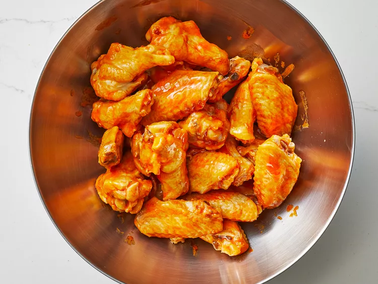

Buffalo sauce and hot sauce are not the same thing. Hot sauce is a spicy blend of cayenne pepper, vinegar, and salt. Buffalo sauce, meanwhile, is hot sauce that's been enhanced with butter and other ingredients. Buffalo sauce is much richer and smoother than regular hot sauce. It's used as a dipping sauce or a condiment. Of course, Buffalo sauce is most commonly associated with chicken wings.
Combine hot sauce, butter, vinegar, Worcestershire sauce, cayenne, garlic powder, and salt in a pot over medium heat. Bring to a simmer while stirring with a whisk.
Step 2As soon as the liquid begins to bubble on the sides of the pot, remove from heat, stir with the whisk, and set aside for use.
Step 3Done!
